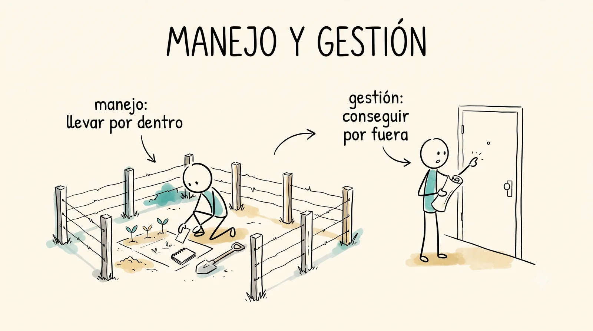
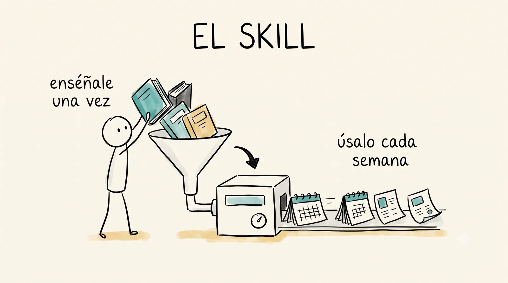
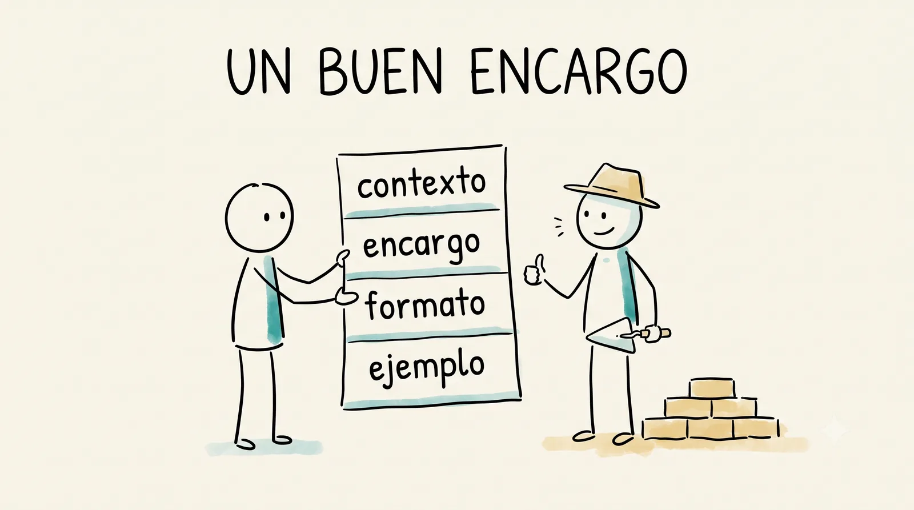
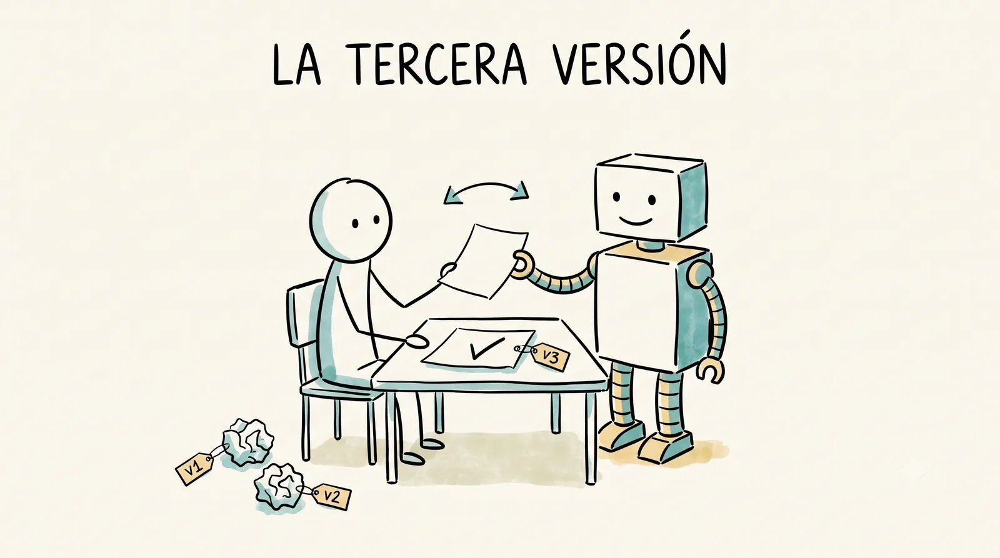
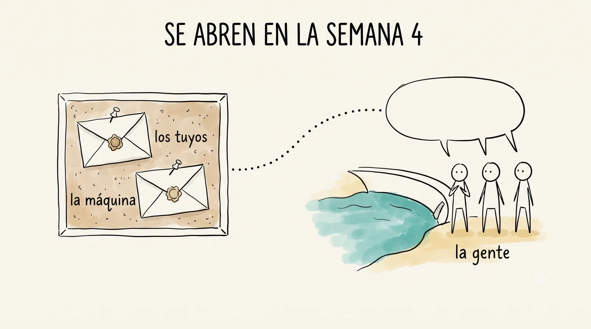

¿Qué harías con un dinero que no es tuyo?
Este curso no trabaja con casos inventados. Hay una presa real (la de La Florida), un encargo real (habilitarla como espacio recreativo para la comunidad) y un fondo semilla que este grupo va a ejercer durante el semestre. La comunidad va a decidir qué se hace; ustedes van a diseñarlo, defenderlo y construirlo. La semana pasada firmaste las reglas del curso. Esta semana empieza el oficio: separar las dos palabras que le dan nombre a la materia, armar el mapa del ciclo de un proyecto, sellar en un sobre lo que tú crees que va a pedir la gente y estrenar una herramienta con la que este curso también se hace: la inteligencia artificial.
Esta semana podrás
- Distinguir manejo de gestión, la pareja de palabras que le da nombre a la materia.
- Señalar, en el encargo de la presa, qué trabajo es de manejar y qué trabajo es de gestionar.
- Armar la primera capa del ciclo del proyecto: de dónde sale una idea y qué le pasa hasta que consigue dinero.
- Ver por dentro cómo se construye este curso con ayuda de una inteligencia artificial.
- Escribirle a una IA un encargo completo: contexto, tarea, formato y ejemplo.
- Sellar tu pronóstico sobre lo que pedirá la comunidad, en un sobre que nadie abrirá hasta la semana 4.
Las dos sesiones de esta semana
Cada día es un mazo de láminas: en clase se proyectan una por una con el botón Presentar, y aquí se quedan, en orden, para volver a ellas cuando quieras.
Manejo y gestión
Separar las dos palabras y ver que el encargo de la presa las necesita las dos.
1 El ticket de la semana pasada 10 min
Al aireLo que el viernes quedó turbio, hoy se contesta en voz alta.
Así arranca cada jueves del semestre. El ticket se contesta porque se atiende: si lo que escribes desapareciera en un cajón, dejarías de escribirlo, y con razón.
Traer dos o tres respuestas del ticket ya elegidas. Leerlas textuales y responderlas ahí mismo, sin nombrar a nadie. Si algo requiere más tiempo, decir en qué semana se retoma.
2 Manejo no es gestión 20 min
"El flojo y el que no planea trabajan dos veces."
Ese refrán habla de manejo: el trabajo interno del proyecto. Planear, organizar, gastar bien, corregir a tiempo. El que no lo hace abre la zanja dos veces y repite el viaje a Jalpan porque faltó una cotización.
"A quien no habla, Dios no lo oye."
Y este habla de gestión: conseguir por fuera lo que el proyecto necesita. Dinero, permisos, aliados, información. Se hace hablando, escribiendo y tocando puertas, y los proyectos que nadie pide no se financian.
Las dos palabras, frente a frente
Se hacen con manos distintas y se echan a perder por razones distintas. El módulo de lombricultura perfectamente planeado que nunca consiguió el permiso del ejido se murió de gestión; el que consiguió todo y gastó el material en tres semanas sin cronograma se murió de manejo.
Aquí van los dos ejemplos del campo cercano, de preferencia de proyectos que el grupo conozca. Preguntar primero si alguien conoce un proyecto que se haya caído, y colgar la distinción de ese caso si sale.

3 Gimnasio 1 · Refranes de gestión 20 min
Actividad · en parejasOcho refranes de los de tu casa: ¿hablan de manejar, de gestionar o de planear?
Proyectado, con el ejercicio del gimnasio. Los refranes que dividan al grupo se comentan ahí mismo, sobre la marcha: en los que todos aciertan no hay mucho que aprender.
Avanzar refrán por refrán con votación rápida a mano alzada antes de destapar. Detenerse solo donde el grupo se parta; en los unánimes, destapar y seguir. Sin columnas en el pizarrón: la discusión vive en el ejercicio.
4 Gimnasio 2 · ¿Manejo o gestión? 15 min
Actividad · a mano alzadaDiez situaciones de proyectos rurales. Manejo o gestión, sin pensarlo tanto.
Rápido, con el ejercicio del gimnasio proyectado. Se discuten solo las situaciones que partan al grupo por la mitad.
5 Los dos oficios en la presa 20 min
ActividadCon el encargo enfrente: ¿qué trabajo de este proyecto es manejar y qué trabajo es gestionar?
El grupo levanta las dos listas en una hoja grande que se queda pegada en el salón todo el semestre. Se va a corregir muchas veces, y cada corrección va a ser una clase entera resumida en una flecha.
Hoja grande y plumones de dos colores listos desde antes. Anotar textual. Si el grupo se atora, sembrar con dos preguntas: quién tiene que dar permiso para tocar la orilla, y quién decide en qué se gasta el material. Esta hoja es la referencia del semestre: no recortarla aunque el tiempo apriete.
6 El sobre 20 min
ActividadEscribe las tres cosas que tú crees que la comunidad va a pedir para la presa. Cópialas a tu expediente. Firma. Sella.
Primero se llena la línea "Mi pronóstico del sobre" en la hoja "Dónde empiezo" del expediente: esa copia es tuya, para releerla durante el mes que el sobre pase engrapado. Luego el mismo pronóstico va a la hoja del sobre, se firma, se sella y se engrapa a la vista del salón hasta la semana 4. Escribe lo que de verdad crees, no lo que suena bien: la primera medición del curso es esta, y el medido eres tú.
Repartir en este orden y decirlo en voz alta: primero la hoja del expediente, luego la hoja del sobre, luego el sello. Sellar frente al grupo, uno por uno, y engrapar los sobres en el corcho ahí mismo. Mañana se toca la IA; que el pronóstico quede sellado hoy es lo que lo mantiene tuyo. Este bloque no se recorta ni se manda de tarea.
7 Cierre 5 min
Mañana: el mapa del curso y la máquina.
Traer la carpeta del expediente y el celular cargado: mañana se usa en serio.
El ciclo y la máquina
Ver el mapa completo del curso y aprender a trabajar con una IA: encargarle, conversarle y no creerle todo.
1 Gimnasio 3 · El ciclo por capas 30 min
ActividadHoy se dibuja la silueta del mapa que vamos a llenar todo el semestre.
Se arma en el pizarrón con el ejercicio del gimnasio: solo la silueta, sin detalle. Se fotografía y se guarda para compararla con la versión de diciembre, que va a estar rayoneada por todas partes.
Dibujar la silueta grande, dejando aire adentro de cada momento: ese aire es el que se llena semana a semana. La foto va a "Lo que produjimos".
2 El expediente, en firme 10 min
ActividadSe abre la bitácora con la primera entrada: qué esperas de este curso.
Las cinco secciones de la carpeta quedaron explicadas la semana pasada. Hoy se rotulan y la bitácora estrena tinta. Esa primera entrada se relee en diciembre, y conviene escribirla en serio.
3 Demo · Cómo se hace este curso con una IA 40 min
En pantallaEste curso que estás viendo se construye con una inteligencia artificial, y ahora vas a ver cómo.
Sin misticismo y sin publicidad: la máquina en su lugar de herramienta, con lo que hace bien, lo que se le puede enseñar y lo que no hay que creerle.
Tener abiertas desde antes las pestañas: el proyecto de Claude, la hoja de retroalimentación en Drive y dos skills (uno del curso y uno de la vida diaria, como el del tandeo o el de los rides). Proyectar en grande y navegar despacio: el punto es que vean el detrás de cámaras real, no una función espectacular.
Tres cosas en pantalla
La segunda pestaña es la importante: el curso que están viendo lo corrigen ustedes cada semana, y la máquina es la que aplica esas correcciones a los materiales. La tercera enseña algo menos conocido: a una IA se le puede enseñar un oficio dándole los libros del oficio.
Skills: enséñale una vez, úsalo cada semana
Lo que se repite igual cada semana se le enseña una sola vez, y después se pide con una frase.
| La tarea que se repite | Lo que se le enseñó una vez | Lo que se pide después |
|---|---|---|
| El calendario del tandeo del agua de la comunidad | Cómo se reparte y en qué formato se avisa por WhatsApp | "Vamos a tandear" |
| Los rides de la semana entre La Florida y Concá | El formato del calendario y del mensaje al grupo | La lista de conductores, pegada tal cual |
| El reporte mensual de cuentas de un comité | El diseño del reporte y qué se publica y qué no | El Excel del mes, adjunto |
Los tres ejemplos son reales y corren cada semana o cada mes. Piensa en tu propia comunidad: el aviso de la faena, el rol de riego, las cuentas del comité de agua. Todo lo que hoy alguien arma a mano cada vez, aguanta un skill.
Enseñar uno de estos en vivo, corriendo de verdad: pegar una lista informal de conductores y que salga el calendario. El efecto de verlo ejecutarse vale más que explicarlo. Preguntar al grupo qué tarea repetida de su comunidad automatizarían: las respuestas sirven para la unidad 4.

Anatomía de un buen prompt
Con las mismas cuatro piezas se le pide un presupuesto a un albañil o una cotización a un vivero. El gimnasio 4 entrena el diagnóstico: seis prompts escritos con prisa a los que hay que encontrarles la pieza que falta.

El mismo encargo, dos veces
"Ayúdame con lo de la presa."
La máquina escoge por ti qué entender, y lo que escoja rara vez coincide con lo que traías en la cabeza.
"Somos el comité de vecinos de La Florida [contexto]. Escribe la invitación a la faena de limpieza de la orilla, este domingo a las 8 [encargo]. Mensaje corto de WhatsApp, tono amable [formato], parecido a este que mandamos antes: 'Vecinos, les recordamos que…' [ejemplo]."
Se corren los dos en vivo y se comparan las respuestas. La diferencia se explica sola en pantalla.
Correr primero el flojo y dejar que el grupo le encuentre lo genérico antes de correr el completo. Si la conexión falla, escribir los dos prompts en el pizarrón y pedir al grupo que prediga qué va a devolver cada uno.
El secreto que casi nadie usa: conversar
La primera respuesta casi nunca es la buena. La tercera, casi siempre.
Tratar a la IA como máquina expendedora (una moneda, un producto) desperdicia lo mejor que tiene. Se trabaja mejor como con un colega nuevo: le encargas, le dejas preguntar, revisas su borrador y lo regresas con correcciones. La frase que cambia el juego cabe en un renglón y se agrega al final de cualquier prompt.
Demostrarlo en vivo con un encargo del curso: pedir algo con la frase incluida, contestar frente al grupo las preguntas que haga la máquina, y corregir la primera versión en voz alta. Que vean el regateo completo, no solo el resultado final.

Dónde falla, y falla con toda seguridad
La máquina se equivoca con la misma voz segura con la que acierta.
En la semana 3 esto se vuelve deporte: le vamos a pedir a la IA un guion de consulta comunitaria y el ejercicio va a ser cazarle las trampas que trae escondidas. Hoy basta con la sospecha instalada.
Dónde la máquina se queda afuera
El pacto de IA que aceptaste la semana pasada sigue mandando.
La bitácora y las autoevaluaciones se escriben con tu voz: son el registro de lo que tú pensaste, y si las escribe otro dejan de ser evidencia de algo. Los cuatro casos con veredicto y la fórmula para declarar el uso están en el pacto, y se usan desde esta semana.
4 Práctica · El sobre de la máquina 20 min
Actividad · en parejas, con celularTu pronóstico quedó bajo llave ayer. Hoy, pídele el suyo a la máquina.
Cada pareja redacta su prompt con las cuatro piezas y la frase de las preguntas, y se lo corre a la IA que tenga a la mano. Después se leen dos o tres prompts en voz alta: qué le dieron a la máquina y qué le faltó. El pronóstico mejor fundamentado se anota, se firma "La máquina" y se sella en su propio sobre, junto a los de ayer.
Un sobre extra listo para la máquina. Al comparar prompts, preguntar por las piezas: quién le dio contexto de La Florida, quién le pidió formato, quién la dejó preguntar. Si dos parejas obtienen pronósticos muy distintos, leerlos ambos: la diferencia casi siempre viene del prompt, y esa es la lección.

El viernes que viene se sale a la presa.
Qué traer: zapato cerrado, agua, gorra y el celular cargado.
5 Ticket de salida 10 min
Antes de irte: qué te llevas, qué quedó turbio y cómo estuvo el ritmo.
Noventa segundos, con nombre o sin él. Lo que escribas aquí se lee el jueves que viene, en voz alta.
Herramientas de la semana
Manejo no es gestión
Manejar un proyecto es llevarlo por dentro: planear, organizar el trabajo, gastar bien, corregir a tiempo. Gestionar es conseguir por fuera lo que el proyecto necesita: dinero, permisos, aliados, información. Un refrán para cada una. Del manejo: "el flojo y el que no planea trabajan dos veces". De la gestión: "a quien no habla, Dios no lo oye". El curso se llama como se llama porque vas a hacer las dos cosas, con dinero de verdad.
La presa de La Florida
A unos minutos del campus hay una presa que la gente usa a su manera: alguien pesca, alguien pasea, alguien va a mirar el agua. No hay sombra pensada, ni lugar para sentarse, ni nada para los niños. El encargo del semestre: convertir esa orilla en un espacio que la comunidad quiera usar. Qué debe tener no lo decides tú ni lo decide el profesor; lo decide la gente de La Florida, y se lo vamos a preguntar bien (a eso vamos en las semanas 3 y 4).
La IA, vista por dentro
Este curso se construye con ayuda de una inteligencia artificial: los ejercicios del gimnasio, las páginas semanales y hasta la hoja donde el profesor anota lo que ustedes corrigen pasan por ella. El viernes se abre ese detrás de cámaras y se practica el oficio de pedirle bien las cosas: darle contexto, un encargo claro, un formato y un ejemplo, igual que cuando se le pide un presupuesto a un albañil. Para cerrar, la ponemos a pronosticar lo que pedirá la comunidad, y su pronóstico se sella igual que los de ustedes. El pacto de IA que aceptaste la semana pasada sigue mandando: la bitácora y las autoevaluaciones se escriben con tu voz.
Las reglas del fondo
El fondo existe y es del proyecto, no del profesor. Lo que todavía no sabes: cómo se decide quién lo ejerce, en qué se puede gastar y quién vigila cada peso. Esas reglas se destripan en la semana 5. Pista: en el mundo real el dinero de los proyectos casi nunca lo reparte quien te cae bien.
Tu pronóstico, sellado
Esta semana escribes las tres cosas que tú crees que la comunidad va a pedir para la presa, y las sellas en un sobre con tu nombre frente al grupo. Nadie lo abre hasta la semana 4, cuando la consulta haya hablado. Ahí sabremos quién conoce a su comunidad y quién diseñaba de oídas. No es adivinanza: es la primera medición del curso, y el medido eres tú. Este semestre la máquina también pronostica, y también se abre en la semana 4.
El gimnasio
Hoja de consulta
- Proyecto
- Esfuerzo temporal, con principio y fin, para lograr un cambio concreto con recursos limitados. Un módulo de lombricultura que arranca en marzo y entrega composta en septiembre es un proyecto; ordeñar todos los días es una operación. La diferencia importa: los proyectos se diseñan, las operaciones se sostienen.
- Manejo de proyectos
- Llevar el proyecto por dentro: definir qué se hará, en qué orden, con qué dinero y quién hace qué, y corregir cuando la realidad opine distinto (siempre opina distinto).
- Gestión de proyectos
- Conseguir por fuera lo que el proyecto necesita: financiamiento, permisos, aliados, información, gente. Se hace hablando, escribiendo y tocando puertas. Quien tiene más saliva, come más pinole.
- El ciclo del proyecto
- Cuatro momentos que este curso recorre completos: la idea (de dónde sale y cómo se afina), el diseño (convertirla en plan que se sostenga), el manejo y la evaluación (ejecutar, medir, corregir) y la gestión (conseguir los recursos y rendir cuentas). El mapa completo se va a ir dibujando en el pizarrón semana a semana, por capas.
- El fondo semilla
- $10,000 de capital semilla para arrancar lo que el proceso decida. No es premio ni beca, y tampoco es el presupuesto completo: es la contrapartida con la que se sale a buscar el resto. Tiene reglas (semana 5) y libro de cuentas público (más adelante).
- El sobre
- Tu pronóstico sellado de lo que pedirá la comunidad. Se firma, se sella y se guarda a la vista del grupo. Se abre en la semana 4, después de la consulta.
- El sobre de la máquina
- El pronóstico que una IA hace del mismo encargo, sellado el viernes después de los sobres del grupo. Se abre en la semana 4 con los demás, para comparar lo que creyó cada quien, lo que calculó la máquina y lo que dijo la gente.
- Prompt
- El encargo que se le escribe a una inteligencia artificial. Uno completo trae cuatro piezas: contexto (quién eres y de qué va el asunto), encargo (qué quieres exactamente), formato (cómo lo quieres recibir) y ejemplo (una muestra de lo que te sirve). Con esas mismas cuatro piezas se le pide un presupuesto a un albañil o una cotización a un vivero.
- Skill
- Instrucciones y materiales (manuales, libros, ejemplos propios) que se le cargan a una IA para que trabaje cierto tipo de tarea a la manera de uno. El viernes se enseña uno en vivo, armado destilando libros completos.
- El expediente del gestor
- Carpeta física que arrancaste la semana pasada con los pactos firmados y que alimentas todo el semestre: bitácora, registro de retos, evidencias por unidad, autoevaluaciones. Al final del curso te la llevas: es tu primer portafolio profesional, no un trámite.
- Ticket de salida
- Cierre de cada viernes: dos o tres preguntas cortas sobre lo que pasó en la semana. Sin calificación. Sirve para que el profesor sepa qué quedó claro y qué hay que volver a tocar.
- "Tu calificación"
- La página del sitio donde está explicado el sistema completo de evaluación. Está siempre abierta, sin candado. Versión corta: durante el semestre ningún trabajo lleva número; todo produce retroalimentación y evidencia, y la calificación del acta sale al final, contigo en la mesa.
Lo que produjimos
Aquí quedarán la foto de los sobres sellados (incluido el de la máquina), las dos listas de la presa (lo que es manejar y lo que es gestionar), los mejores prompts de la práctica del viernes y la primera capa del ciclo dibujada en el pizarrón. Esta sección se llena con lo que pase en el aula.
Aviéntate 🌊
Las bolas de malabares de la semana pasada se te cayeron y no pasó nada. Las de este semestre son otra cosa: una presa que existe, un fondo que se gasta y una comunidad que va a esperar algo. También se van a caer algunas, y tampoco pasa nada, siempre que no se caigan las mismas dos veces.
El sobre que sellaste el jueves es la primera medición del curso, y el medido eres tú. Escribe lo que de verdad crees, no lo que suena bien.
Esta semana todavía no abre.
Disponible a partir del . Mientras tanto puedes entrar a todo el gimnasio, a la Semana 0 y a Tu calificación, que están siempre abiertos.